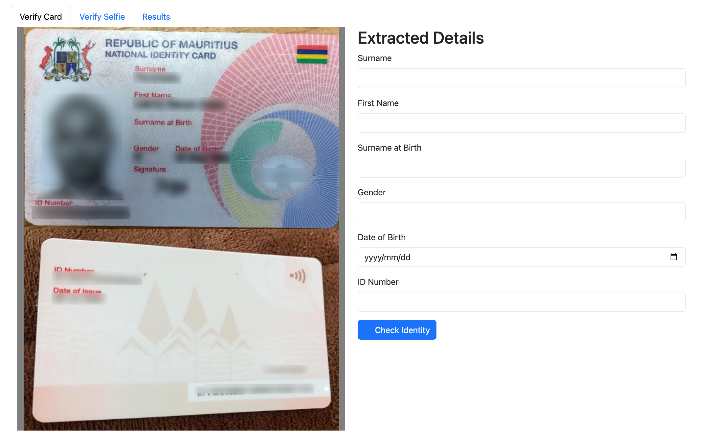
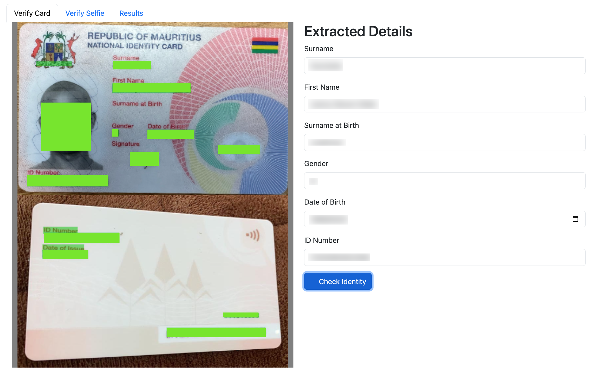

<!DOCTYPE html>


<html lang="en">
  

    <head>
      <meta charset="utf-8" />
       
      <meta name="keywords" content="agile, tdd, software engineering" />
       
      <meta
        name="viewport"
        content="width=device-width, initial-scale=1, maximum-scale=1"
      />
      
        <meta property="og:image" content="fr2.png"/>
        <meta property="og:description" content="I wanted to see how Azure&#39;s Face API and Cognitive Services for Vision would stand-up against commercial off-the-shelf offerings. Here&#39;s what happened..."/>
        
      <title>eKYC with Azure Face API &amp; Cognitive Services |  nick dot blog</title>
  <meta name="generator" content="hexo-theme-ayer">
      
      <link rel="shortcut icon" href="/favicon.ico" />
       
<link rel="stylesheet" href="/dist/main.css">

      
<link rel="stylesheet" href="/css/fonts/remixicon.css">

      
<link rel="stylesheet" href="/css/custom.css">
 
      <script src="https://cdn.staticfile.org/pace/1.2.4/pace.min.js"></script>
       
<!-- Global site tag (gtag.js) - Google Analytics -->
<script async src="https://www.googletagmanager.com/gtag/js?id=G-KXJW9BVBJ4"></script>
<script>
  window.dataLayer = window.dataLayer || [];
  function gtag(){dataLayer.push(arguments);}
  gtag('js', new Date());
  gtag('config', 'G-KXJW9BVBJ4');
</script>

 

      <link
        rel="stylesheet"
        href="https://cdn.jsdelivr.net/npm/@sweetalert2/theme-bulma@5.0.1/bulma.min.css"
      />
      <script src="https://cdn.jsdelivr.net/npm/sweetalert2@11.0.19/dist/sweetalert2.min.js"></script>

      <!-- mermaid -->
      
      <style>
        .swal2-styled.swal2-confirm {
          font-size: 1.6rem;
        }
      </style>
    <link rel="alternate" href="/atom.xml" title="nick dot blog" type="application/atom+xml">
</head>
  </html>
</html>


<body>
  <div id="app">
    
      
    <main class="content on">
      <section class="outer">
  <article
  id="post-adventures-in-facial-recognition"
  class="article article-type-post"
  itemscope
  itemprop="blogPost"
  data-scroll-reveal
>
  <div class="article-inner">
    
    <header class="article-header">
       
<h1 class="article-title sea-center" style="border-left:0" itemprop="name">
  eKYC with Azure Face API &amp; Cognitive Services
</h1>
 

      
    </header>
     
    <div class="article-meta">
      <a href="/2023/07/01/adventures-in-facial-recognition/" class="article-date">
  <time datetime="2023-07-01T04:04:56.000Z" itemprop="datePublished">2023-07-01</time>
</a>   
<div class="word_count">
    <span class="post-time">
        <span class="post-meta-item-icon">
            <i class="ri-quill-pen-line"></i>
            <span class="post-meta-item-text"> Word count:</span>
            <span class="post-count">1.1k</span>
        </span>
    </span>

    <span class="post-time">
        &nbsp; | &nbsp;
        <span class="post-meta-item-icon">
            <i class="ri-book-open-line"></i>
            <span class="post-meta-item-text"> Reading time≈</span>
            <span class="post-count">7 min</span>
        </span>
    </span>
</div>
 
    </div>
      
    <div class="tocbot"></div>


  
    <div class="article-entry" itemprop="articleBody">
       
  <p>I wanted to see how Azure’s Face API and Cognitive Services for Vision would stand-up against commercial off-the-shelf offerings. Here’s what happened…</p>
<h1 id="Requirements"><a href="#Requirements" class="headerlink" title="Requirements"></a>Requirements</h1><p>The requirement is to scan the Mauritian National Identity Card and extract the various text fields. In addition we’ll need to scan the barcode found on the back of the card and compare it with the ID Number on the front. Lastly we need to compare the photo on the card with a selfie provided by the customer.</p>
<h1 id="Set-up"><a href="#Set-up" class="headerlink" title="Set-up"></a>Set-up</h1><p>I started by building a simple app using Node Express &amp; Bootstrap that would allow me to upload the ID Card and display the extracted details.</p>


<h1 id="Identifying-the-Face"><a href="#Identifying-the-Face" class="headerlink" title="Identifying the Face"></a>Identifying the Face</h1><p>Azure provides a dedicated <a target="_blank" rel="noopener" href="https://azure.microsoft.com/en-gb/products/cognitive-services/face">Face API</a> for this purpose. Simply call the <a target="_blank" rel="noopener" href="https://learn.microsoft.com/en-us/rest/api/faceapi/face/detect-with-stream?tabs=HTTP">‘detect’ endpoint</a> passing the image data as an octet-stream. I set the returnFaceId to true and returnFaceLandmarks to false. Here are the results:</p>
<figure class="highlight plaintext"><table><tr><td class="gutter"><pre><span class="line">1</span><br><span class="line">2</span><br><span class="line">3</span><br><span class="line">4</span><br><span class="line">5</span><br><span class="line">6</span><br><span class="line">7</span><br><span class="line">8</span><br><span class="line">9</span><br></pre></td><td class="code"><pre><span class="line">&#123;</span><br><span class="line">    &quot;faceId&quot;: &quot;d6e2d95e-976c-4709-8f79-f6d93299408e&quot;,</span><br><span class="line">    &quot;faceRectangle&quot;: &#123;</span><br><span class="line">        &quot;top&quot;: 696,</span><br><span class="line">        &quot;left&quot;: 200,</span><br><span class="line">        &quot;width&quot;: 413,</span><br><span class="line">        &quot;height&quot;: 413</span><br><span class="line">    &#125;</span><br><span class="line">&#125;</span><br></pre></td></tr></table></figure>

<p>The faceId is a reference to the underlying biometric data now residing in Azure and will be used later when we verify the selfie. The faceRectangle is exactly that - the coordinates of the face in the source image.</p>
<blockquote>
<p>I’m not posting the code here as it’s trivial. If you’re interested let me know in the comments and I’ll share it. </p>
</blockquote>
<h1 id="Identifying-Card-Details"><a href="#Identifying-Card-Details" class="headerlink" title="Identifying Card Details"></a>Identifying Card Details</h1><p>To extract the card details I used the Cognitive Services <a target="_blank" rel="noopener" href="https://azure.microsoft.com/en-us/products/cognitive-services/vision-services">Computer Vision Service</a>. I called the <a target="_blank" rel="noopener" href="https://centraluseuap.dev.cognitive.microsoft.com/docs/services/unified-vision-apis-public-preview-2023-02-01-preview/operations/61d65934cd35050c20f73ab6">‘analyse’ endpoint</a> again passing the image data as an octet-stream. I set the ‘features’ parameter to ‘read’ as I want to extract text data from the image. </p>
<p>Here are the results:</p>
<figure class="highlight plaintext"><table><tr><td class="gutter"><pre><span class="line">1</span><br><span class="line">2</span><br><span class="line">3</span><br><span class="line">4</span><br><span class="line">5</span><br><span class="line">6</span><br><span class="line">7</span><br><span class="line">8</span><br><span class="line">9</span><br><span class="line">10</span><br><span class="line">11</span><br><span class="line">12</span><br><span class="line">13</span><br><span class="line">14</span><br><span class="line">15</span><br><span class="line">16</span><br><span class="line">17</span><br><span class="line">18</span><br><span class="line">19</span><br><span class="line">20</span><br><span class="line">21</span><br><span class="line">22</span><br><span class="line">23</span><br><span class="line">24</span><br><span class="line">25</span><br><span class="line">26</span><br><span class="line">27</span><br><span class="line">28</span><br><span class="line">29</span><br><span class="line">30</span><br><span class="line">31</span><br><span class="line">32</span><br><span class="line">33</span><br><span class="line">34</span><br><span class="line">35</span><br><span class="line">36</span><br><span class="line">37</span><br><span class="line">38</span><br><span class="line">39</span><br><span class="line">40</span><br><span class="line">41</span><br><span class="line">42</span><br><span class="line">43</span><br><span class="line">44</span><br><span class="line">45</span><br><span class="line">46</span><br><span class="line">47</span><br><span class="line">48</span><br><span class="line">49</span><br><span class="line">50</span><br><span class="line">51</span><br><span class="line">52</span><br><span class="line">53</span><br><span class="line">54</span><br><span class="line">55</span><br><span class="line">56</span><br><span class="line">57</span><br><span class="line">58</span><br><span class="line">59</span><br><span class="line">60</span><br><span class="line">61</span><br><span class="line">62</span><br></pre></td><td class="code"><pre><span class="line">&#123;</span><br><span class="line">        &quot;readResult&quot;: &#123;</span><br><span class="line">            &quot;stringIndexType&quot;: &quot;TextElements&quot;,</span><br><span class="line">            &quot;content&quot;: &quot;REPUBLIC OF MAURITIUS\nNATIONAL IDENTITY CARD\...&quot;,</span><br><span class="line">            &quot;pages&quot;: [</span><br><span class="line">                &#123;</span><br><span class="line">                    &quot;height&quot;: 1491.0,</span><br><span class="line">                    &quot;width&quot;: 2284.0,</span><br><span class="line">                    &quot;angle&quot;: 0.8425,</span><br><span class="line">                    &quot;pageNumber&quot;: 1,</span><br><span class="line">                    &quot;words&quot;: [</span><br><span class="line">                        &#123;</span><br><span class="line">                            &quot;content&quot;: &quot;REPUBLIC&quot;,</span><br><span class="line">                            &quot;boundingBox&quot;: [],</span><br><span class="line">                            &quot;confidence&quot;: 0.994,</span><br><span class="line">                            &quot;span&quot;: &#123;</span><br><span class="line">                                &quot;offset&quot;: 0,</span><br><span class="line">                                &quot;length&quot;: 8</span><br><span class="line">                            &#125;</span><br><span class="line">                        &#125;,</span><br><span class="line">                        ...</span><br><span class="line">                    ],</span><br><span class="line">                    &quot;spans&quot;: [</span><br><span class="line">                        &#123;</span><br><span class="line">                            &quot;offset&quot;: 0,</span><br><span class="line">                            &quot;length&quot;: 232</span><br><span class="line">                        &#125;</span><br><span class="line">                    ],</span><br><span class="line">                    &quot;lines&quot;: [</span><br><span class="line">                        &#123;</span><br><span class="line">                            &quot;content&quot;: &quot;REPUBLIC OF MAURITIUS&quot;,</span><br><span class="line">                            &quot;boundingBox&quot;: [],</span><br><span class="line">                            &quot;spans&quot;: [</span><br><span class="line">                                &#123;</span><br><span class="line">                                    &quot;offset&quot;: 0,</span><br><span class="line">                                    &quot;length&quot;: 21</span><br><span class="line">                                &#125;</span><br><span class="line">                            ]</span><br><span class="line">                        &#125;,</span><br><span class="line">                    ]</span><br><span class="line">                &#125;</span><br><span class="line">            ],</span><br><span class="line">            &quot;styles&quot;: [</span><br><span class="line">                &#123;</span><br><span class="line">                    &quot;isHandwritten&quot;: true,</span><br><span class="line">                    &quot;spans&quot;: [</span><br><span class="line">                        &#123;</span><br><span class="line">                            &quot;offset&quot;: 199,</span><br><span class="line">                            &quot;length&quot;: 8</span><br><span class="line">                        &#125;</span><br><span class="line">                    ],</span><br><span class="line">                    &quot;confidence&quot;: 0.9</span><br><span class="line">                &#125;</span><br><span class="line">            ],</span><br><span class="line">            &quot;modelVersion&quot;: &quot;2022-04-30&quot;</span><br><span class="line">        &#125;,</span><br><span class="line">        &quot;modelVersion&quot;: &quot;2023-02-01-preview&quot;,</span><br><span class="line">        &quot;metadata&quot;: &#123;</span><br><span class="line">            &quot;width&quot;: 2284,</span><br><span class="line">            &quot;height&quot;: 1491</span><br><span class="line">        &#125;</span><br><span class="line">    &#125;</span><br></pre></td></tr></table></figure>
<p>The results are separated into individual words, lines of text as well as handwritten information. Each data element is presented with the extracted text as well as the coordinates of the text in the image. </p>
<h1 id="Displaying-the-Results"><a href="#Displaying-the-Results" class="headerlink" title="Displaying the Results"></a>Displaying the Results</h1><p>Here are the results. I uploaded the card images, ran the API’s and rendered the results. In my testing across a number of cards the overall accuracy was extremely high. There were some issues though which I will describe later.</p>


<h2 id="Matching-fields"><a href="#Matching-fields" class="headerlink" title="Matching fields"></a>Matching fields</h2><p>To figure out which fields were which I needed to map data fields to the labels. Since I knew the labels I am expecting, for example ‘First Name’, and I know the data for this field is immediately below it I calculated the distance from each label field to each non-label field and then selected the closest one. I added a cutoff for cases where there was no field. For example here there is no value for ‘Surname at Birth’ so the nearest field would have been invalid.</p>
<h2 id="Coordinate-translation"><a href="#Coordinate-translation" class="headerlink" title="Coordinate translation"></a>Coordinate translation</h2><p>I wanted to render the extracted data on the image. In addition to the aesthetic value (I am aware that I am stretching this term here when used in reference to my UI) having this visual feedback is essential for debugging. You really do need to see what is being extracted and where on the image. </p>
<p>A challenge though is that the coordinates returned from the API are based on the dimensions of the source image. When the image is rendered onto the webpage, unless it is rendered to the original size, the coordinates will be invalid. To correct this you need to translate the coordinates between the source image and the destination image. I use the following approach:</p>
<figure class="highlight plaintext"><table><tr><td class="gutter"><pre><span class="line">1</span><br><span class="line">2</span><br></pre></td><td class="code"><pre><span class="line">var translatedX = (sourceX / sourceWidth) * translatedWidth;</span><br><span class="line">var translatedY = (sourceY / sourceHeight) * translatedHeight;</span><br></pre></td></tr></table></figure>

<h1 id="Verifying-the-Selfie"><a href="#Verifying-the-Selfie" class="headerlink" title="Verifying the Selfie"></a>Verifying the Selfie</h1><p>The last step is to verify the selfie. Once I have the image I use the ‘detect’ endpoint described earlier to get the faceId for the selfie. All that remains is to pass both faceId’s to the <a target="_blank" rel="noopener" href="https://learn.microsoft.com/en-us/rest/api/faceapi/face/verify-face-to-face?tabs=HTTP">‘verify’ endpoint</a>. Here’s the result:</p>
<figure class="highlight plaintext"><table><tr><td class="gutter"><pre><span class="line">1</span><br><span class="line">2</span><br><span class="line">3</span><br><span class="line">4</span><br></pre></td><td class="code"><pre><span class="line">&#123;</span><br><span class="line">  &quot;isIdentical&quot;: true,</span><br><span class="line">  &quot;confidence&quot;: 0.9</span><br><span class="line">&#125;</span><br></pre></td></tr></table></figure>
<p>Essentially there is a 90% chance that the two faces belong to the same person or the face belongs to the person.</p>
<h1 id="Image-processing-Gotchas"><a href="#Image-processing-Gotchas" class="headerlink" title="Image processing Gotchas"></a>Image processing Gotchas</h1><p>Putting this together I ran into a few issues:</p>
<h2 id="Selfie-Capture"><a href="#Selfie-Capture" class="headerlink" title="Selfie Capture"></a>Selfie Capture</h2><p>If you are designing a flow to capture a selfie you need to ensure that your UX gives you the best possible chance to capture a high-quality selfie. As image quality drops the accuracy of the processing drops dramatically. Fortunately Microsoft has provided some excellent <a target="_blank" rel="noopener" href="https://learn.microsoft.com/en-us/azure/cognitive-services/computer-vision/enrollment-overview">guidance and sample applications</a> to assist.</p>
<h2 id="Image-Quality"><a href="#Image-Quality" class="headerlink" title="Image Quality"></a>Image Quality</h2><p>Blurry or badly scaled images throw off the face identification as well as text extraction. You will need to account for this in designing your process.</p>
<h2 id="Image-Sizes"><a href="#Image-Sizes" class="headerlink" title="Image Sizes"></a>Image Sizes</h2><p>The Azure API’s have limits on the size of file you can upload. You will need to resize the image as part of your process.</p>
<h2 id="Item-Padding"><a href="#Item-Padding" class="headerlink" title="Item Padding"></a>Item Padding</h2><p>In our dataset there were several images where the card had been placed on a flatbed scanner and copied as an A4 page. This means that we had a lot of dead space around the card. Simply scaling the image caused problems as the scaled card lost too much data in the process to be useful. We will need to develop a mechanism to identity where on the A4 page the card is sitting and then crop the source image to those dimensions.</p>
<h1 id="Conclusion"><a href="#Conclusion" class="headerlink" title="Conclusion"></a>Conclusion</h1><p>All-in-all a great experience working with these services. We’ve got a basic solution running and it did not take a huge amount of time. There are still a few features, such as liveness checking and image tampering, I’d still want to play with but for now I’ve got a good feel for the effort and challenges involved in going this route.</p>
 
      <!-- reward -->
      
    </div>
    

    <!-- copyright -->
    
    <div class="declare">
      <ul class="post-copyright">
        <li>
          <i class="ri-copyright-line"></i>
          <strong>Copyright： </strong>
          
          Copyright is owned by the author. For commercial reprints, please contact the author for authorization. For non-commercial reprints, please indicate the source.
          
        </li>
      </ul>
    </div>
    
    <footer class="article-footer">
       
  <ul class="article-tag-list" itemprop="keywords"><li class="article-tag-list-item"><a class="article-tag-list-link" href="/tags/azure/" rel="tag">azure</a></li></ul>

    </footer>
  </div>

   
  <nav class="article-nav">
    
      <a href="/2023/07/08/kraken-auth/" class="article-nav-link">
        <strong class="article-nav-caption">Previous Post</strong>
        <div class="article-nav-title">
          
            Authenticate the KrakenD!
          
        </div>
      </a>
    
    
      <a href="/2023/06/23/release-the-krakend/" class="article-nav-link">
        <strong class="article-nav-caption">Next Post</strong>
        <div class="article-nav-title">Release the KrakenD. Part 1 - Metrics</div>
      </a>
    
  </nav>

  
   
<div class="gitalk" id="gitalk-container"></div>

<link rel="stylesheet" href="https://cdn.staticfile.org/gitalk/1.7.2/gitalk.min.css">


<script src="https://cdn.staticfile.org/gitalk/1.7.2/gitalk.min.js"></script>


<script src="https://cdn.staticfile.org/blueimp-md5/2.19.0/js/md5.min.js"></script>

<script type="text/javascript">
  var gitalk = new Gitalk({
    clientID: '8318211c28156a054b60',
    clientSecret: 'a3e7c2c22e61867951cbca3c52fbcc22f43dcfb8',
    repo: 'BlogComments',
    owner: 'nickmza',
    admin: ['nickmza'],
    // id: location.pathname,      // Ensure uniqueness and length less than 50
    id: md5(location.pathname),
    distractionFreeMode: false,  // Facebook-like distraction free mode
    pagerDirection: 'last'
  })

  gitalk.render('gitalk-container')
</script>

  
   
    <script src="https://cdn.staticfile.org/twikoo/1.4.18/twikoo.all.min.js"></script>
    <div id="twikoo" class="twikoo"></div>
    <script>
        twikoo.init({
            envId: ""
        })
    </script>
 
</article>

</section>
      <footer class="footer">
  <div class="outer">
    <ul>
      <li>
        Copyrights &copy;
        2015-2023
        <i class="ri-heart-fill heart_icon"></i> Nick Mckenzie
      </li>
    </ul>
    <ul>
      <li>
        
      </li>
    </ul>
    <ul>
      <li>
        
      </li>
    </ul>
    <ul>
      
    </ul>
    <ul>
      
    </ul>
    <ul>
      <li>
        <!-- cnzz统计 -->
        
        <script type="text/javascript" src='https://s9.cnzz.com/z_stat.php?id=1278069914&amp;web_id=1278069914'></script>
        
      </li>
    </ul>
  </div>
</footer>    
    </main>
    <div class="float_btns">
      <div class="totop" id="totop">
  <i class="ri-arrow-up-line"></i>
</div>

<div class="todark" id="todark">
  <i class="ri-moon-line"></i>
</div>

    </div>
    <aside class="sidebar on">
      <button class="navbar-toggle"></button>
<nav class="navbar">
  
  <div class="logo">
    <a href="/"></a>
  </div>
  
  <ul class="nav nav-main">
    
    <li class="nav-item">
      <a class="nav-item-link" href="/">Home</a>
    </li>
    
    <li class="nav-item">
      <a class="nav-item-link" href="/archives">Archives</a>
    </li>
    
    <li class="nav-item">
      <a class="nav-item-link" href="/categories">Categories</a>
    </li>
    
    <li class="nav-item">
      <a class="nav-item-link" href="/tags">Tags</a>
    </li>
    
    <li class="nav-item">
      <a class="nav-item-link" href="/Resources">Resources</a>
    </li>
    
    <li class="nav-item">
      <a class="nav-item-link" href="/about">About</a>
    </li>
    
  </ul>
</nav>
<nav class="navbar navbar-bottom">
  <ul class="nav">
    <li class="nav-item">
      
      <a class="nav-item-link nav-item-search"  title="Search">
        <i class="ri-search-line"></i>
      </a>
      
      
      <a class="nav-item-link" target="_blank" href="/atom.xml" title="RSS Feed">
        <i class="ri-rss-line"></i>
      </a>
      
    </li>
  </ul>
</nav>
<div class="search-form-wrap">
  <div class="local-search local-search-plugin">
  <input type="search" id="local-search-input" class="local-search-input" placeholder="Search...">
  <div id="local-search-result" class="local-search-result"></div>
</div>
</div>
    </aside>
    <div id="mask"></div>

<!-- #reward -->
<div id="reward">
  <span class="close"><i class="ri-close-line"></i></span>
  <p class="reward-p"><i class="ri-cup-line"></i>请我喝杯咖啡吧~</p>
  <div class="reward-box">
    
    <div class="reward-item">
      
      <span class="reward-type">支付宝</span>
    </div>
    
    
    <div class="reward-item">
      
      <span class="reward-type">微信</span>
    </div>
    
  </div>
</div>
    
<script src="/js/jquery-3.6.0.min.js"></script>
 
<script src="/js/lazyload.min.js"></script>

<!-- Tocbot -->
 
<script src="/js/tocbot.min.js"></script>

<script>
  tocbot.init({
    tocSelector: ".tocbot",
    contentSelector: ".article-entry",
    headingSelector: "h1, h2, h3, h4, h5, h6",
    hasInnerContainers: true,
    scrollSmooth: true,
    scrollContainer: "main",
    positionFixedSelector: ".tocbot",
    positionFixedClass: "is-position-fixed",
    fixedSidebarOffset: "auto",
  });
</script>

<script src="https://cdn.staticfile.org/jquery-modal/0.9.2/jquery.modal.min.js"></script>
<link
  rel="stylesheet"
  href="https://cdn.staticfile.org/jquery-modal/0.9.2/jquery.modal.min.css"
/>
<script src="https://cdn.staticfile.org/justifiedGallery/3.8.1/js/jquery.justifiedGallery.min.js"></script>

<script src="/dist/main.js"></script>

<!-- ImageViewer -->
 <!-- Root element of PhotoSwipe. Must have class pswp. -->
<div class="pswp" tabindex="-1" role="dialog" aria-hidden="true">

    <!-- Background of PhotoSwipe. 
         It's a separate element as animating opacity is faster than rgba(). -->
    <div class="pswp__bg"></div>

    <!-- Slides wrapper with overflow:hidden. -->
    <div class="pswp__scroll-wrap">

        <!-- Container that holds slides. 
            PhotoSwipe keeps only 3 of them in the DOM to save memory.
            Don't modify these 3 pswp__item elements, data is added later on. -->
        <div class="pswp__container">
            <div class="pswp__item"></div>
            <div class="pswp__item"></div>
            <div class="pswp__item"></div>
        </div>

        <!-- Default (PhotoSwipeUI_Default) interface on top of sliding area. Can be changed. -->
        <div class="pswp__ui pswp__ui--hidden">

            <div class="pswp__top-bar">

                <!--  Controls are self-explanatory. Order can be changed. -->

                <div class="pswp__counter"></div>

                <button class="pswp__button pswp__button--close" title="Close (Esc)"></button>

                <button class="pswp__button pswp__button--share" style="display:none" title="Share"></button>

                <button class="pswp__button pswp__button--fs" title="Toggle fullscreen"></button>

                <button class="pswp__button pswp__button--zoom" title="Zoom in/out"></button>

                <!-- Preloader demo http://codepen.io/dimsemenov/pen/yyBWoR -->
                <!-- element will get class pswp__preloader--active when preloader is running -->
                <div class="pswp__preloader">
                    <div class="pswp__preloader__icn">
                        <div class="pswp__preloader__cut">
                            <div class="pswp__preloader__donut"></div>
                        </div>
                    </div>
                </div>
            </div>

            <div class="pswp__share-modal pswp__share-modal--hidden pswp__single-tap">
                <div class="pswp__share-tooltip"></div>
            </div>

            <button class="pswp__button pswp__button--arrow--left" title="Previous (arrow left)">
            </button>

            <button class="pswp__button pswp__button--arrow--right" title="Next (arrow right)">
            </button>

            <div class="pswp__caption">
                <div class="pswp__caption__center"></div>
            </div>

        </div>

    </div>

</div>

<link rel="stylesheet" href="https://cdn.staticfile.org/photoswipe/4.1.3/photoswipe.min.css">
<link rel="stylesheet" href="https://cdn.staticfile.org/photoswipe/4.1.3/default-skin/default-skin.min.css">
<script src="https://cdn.staticfile.org/photoswipe/4.1.3/photoswipe.min.js"></script>
<script src="https://cdn.staticfile.org/photoswipe/4.1.3/photoswipe-ui-default.min.js"></script>

<script>
    function viewer_init() {
        let pswpElement = document.querySelectorAll('.pswp')[0];
        let $imgArr = document.querySelectorAll(('.article-entry img:not(.reward-img)'))

        $imgArr.forEach(($em, i) => {
            $em.onclick = () => {
                // slider展开状态
                // todo: 这样不好，后面改成状态
                if (document.querySelector('.left-col.show')) return
                let items = []
                $imgArr.forEach(($em2, i2) => {
                    let img = $em2.getAttribute('data-idx', i2)
                    let src = $em2.getAttribute('data-target') || $em2.getAttribute('src')
                    let title = $em2.getAttribute('alt')
                    // 获得原图尺寸
                    const image = new Image()
                    image.src = src
                    items.push({
                        src: src,
                        w: image.width || $em2.width,
                        h: image.height || $em2.height,
                        title: title
                    })
                })
                var gallery = new PhotoSwipe(pswpElement, PhotoSwipeUI_Default, items, {
                    index: parseInt(i)
                });
                gallery.init()
            }
        })
    }
    viewer_init()
</script> 
<!-- MathJax -->

<!-- Katex -->

<!-- busuanzi  -->

<!-- ClickLove -->

<!-- ClickBoom1 -->

<!-- ClickBoom2 -->

<!-- CodeCopy -->
 
<link rel="stylesheet" href="/css/clipboard.css">
 <script src="https://cdn.staticfile.org/clipboard.js/2.0.10/clipboard.min.js"></script>
<script>
  function wait(callback, seconds) {
    var timelag = null;
    timelag = window.setTimeout(callback, seconds);
  }
  !function (e, t, a) {
    var initCopyCode = function(){
      var copyHtml = '';
      copyHtml += '<button class="btn-copy" data-clipboard-snippet="">';
      copyHtml += '<i class="ri-file-copy-2-line"></i><span>COPY</span>';
      copyHtml += '</button>';
      $(".highlight .code pre").before(copyHtml);
      $(".article pre code").before(copyHtml);
      var clipboard = new ClipboardJS('.btn-copy', {
        target: function(trigger) {
          return trigger.nextElementSibling;
        }
      });
      clipboard.on('success', function(e) {
        let $btn = $(e.trigger);
        $btn.addClass('copied');
        let $icon = $($btn.find('i'));
        $icon.removeClass('ri-file-copy-2-line');
        $icon.addClass('ri-checkbox-circle-line');
        let $span = $($btn.find('span'));
        $span[0].innerText = 'COPIED';
        
        wait(function () { // 等待两秒钟后恢复
          $icon.removeClass('ri-checkbox-circle-line');
          $icon.addClass('ri-file-copy-2-line');
          $span[0].innerText = 'COPY';
        }, 2000);
      });
      clipboard.on('error', function(e) {
        e.clearSelection();
        let $btn = $(e.trigger);
        $btn.addClass('copy-failed');
        let $icon = $($btn.find('i'));
        $icon.removeClass('ri-file-copy-2-line');
        $icon.addClass('ri-time-line');
        let $span = $($btn.find('span'));
        $span[0].innerText = 'COPY FAILED';
        
        wait(function () { // 等待两秒钟后恢复
          $icon.removeClass('ri-time-line');
          $icon.addClass('ri-file-copy-2-line');
          $span[0].innerText = 'COPY';
        }, 2000);
      });
    }
    initCopyCode();
  }(window, document);
</script>
 
<!-- CanvasBackground -->

<script>
  if (window.mermaid) {
    mermaid.initialize({ theme: "forest" });
  }
</script>


    
    

  </div>
</body>

</html>